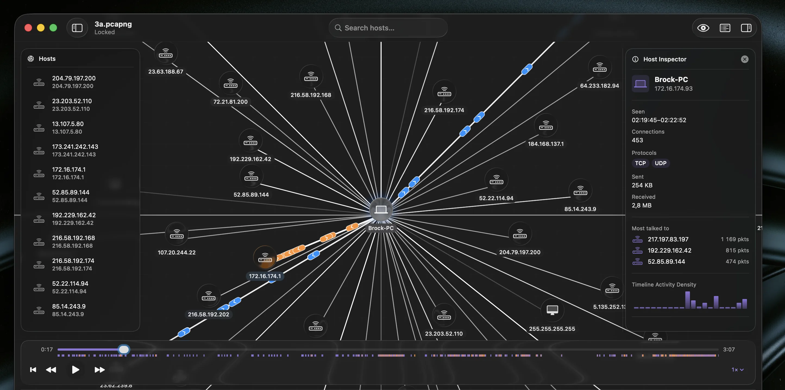
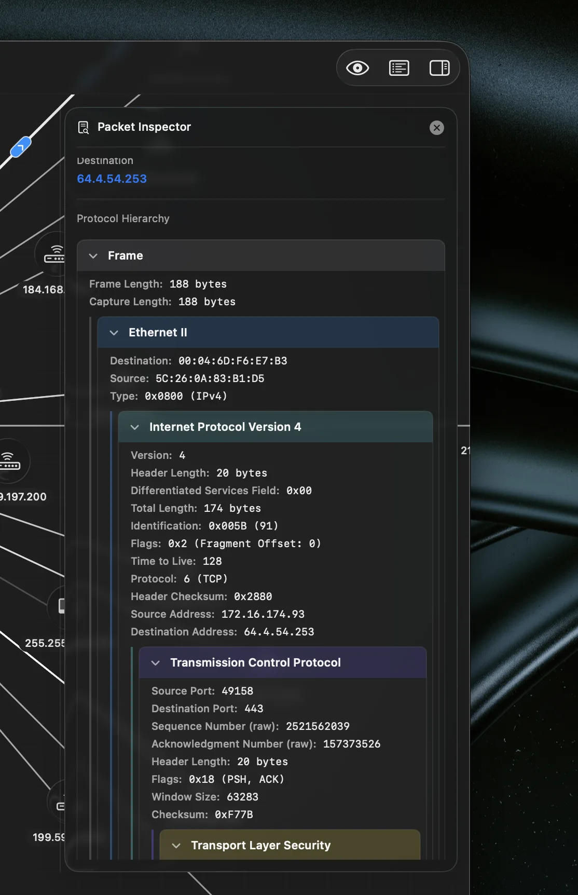
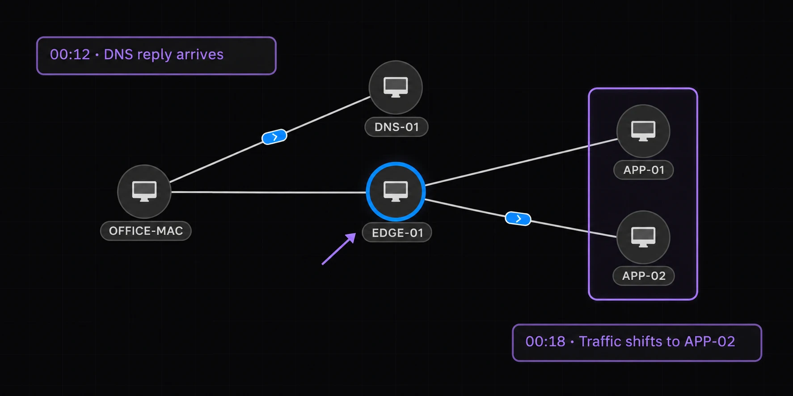
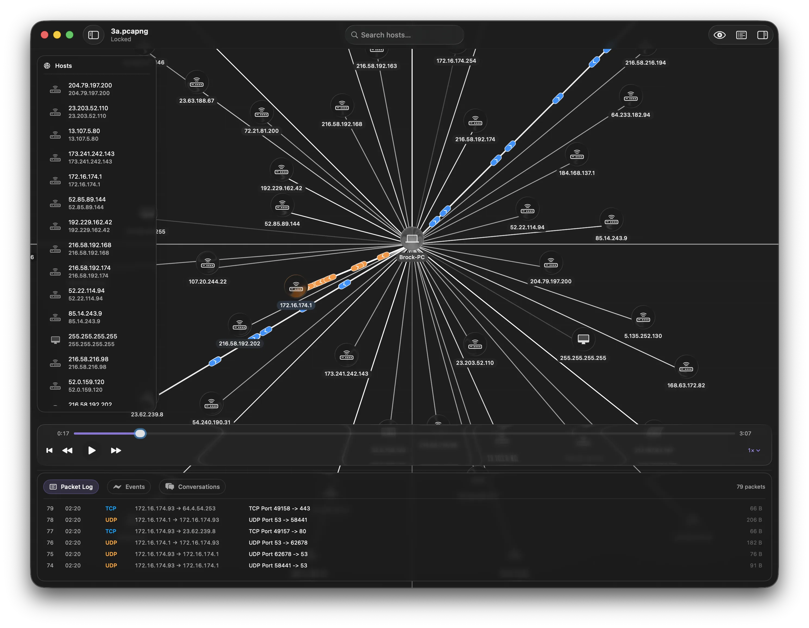

See what happened on the network.
Turn a packet capture into an interactive map. Replay the traffic, inspect the packets behind it, and annotate the moments you want to explain.
Watch the capture unfold.
Open a PCAP or PCAPNG file and Netvis builds a map of the hosts in it. Play back the traffic to see who talked to whom, or scrub to the moment you care about.

Find a lead. Follow it to the packet.
Start with an event or a pair of hosts. Netvis keeps the graph in view as you narrow the capture.

Leave the explanation on the capture.
Add a timestamped text box when something changes. Draw an arrow to the host that matters, or outline the machines you’re comparing. The next person can see where to look and when.

Analyze the capture on your Mac.
Netvis opens saved captures locally with read-only access to the file you select. Use host details, search, and filters to focus on the traffic you need, then return to the full map for context.
See supported capture formats
Common questions
Which capture formats can I open?
Netvis reads .pcap and .pcapng files. It focuses on Ethernet IPv4 traffic with TCP and UDP parsing, plus selected application protocol details.
Can I use Netvis alongside Wireshark?
Yes. Open the saved capture in Netvis to see the topology, replay traffic, and annotate the moments you want to explain.
Does Netvis capture live traffic?
Netvis analyzes saved captures. You can open files from your existing capture tools without installing a packet capture extension.
How does the trial work?
Try Netvis for seven days. The App Store lists the current price for a one-time purchase.
Open a capture you already know.
Replay it, find a conversation, and mark the moment you’d want to show someone else.
Try Netvis free